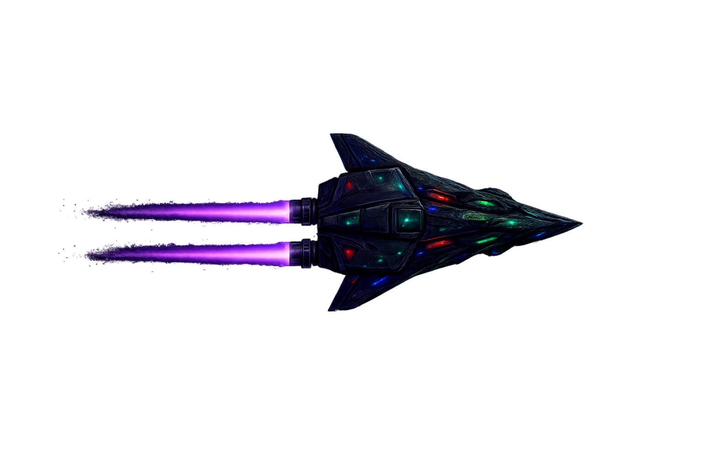
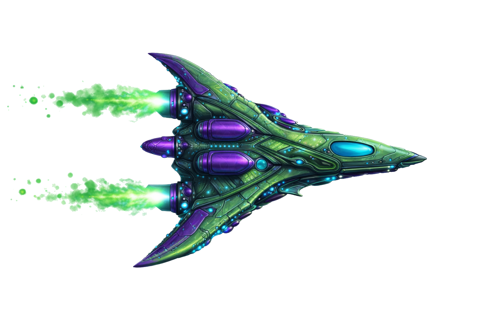
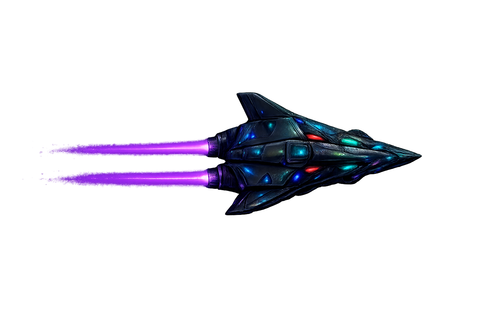
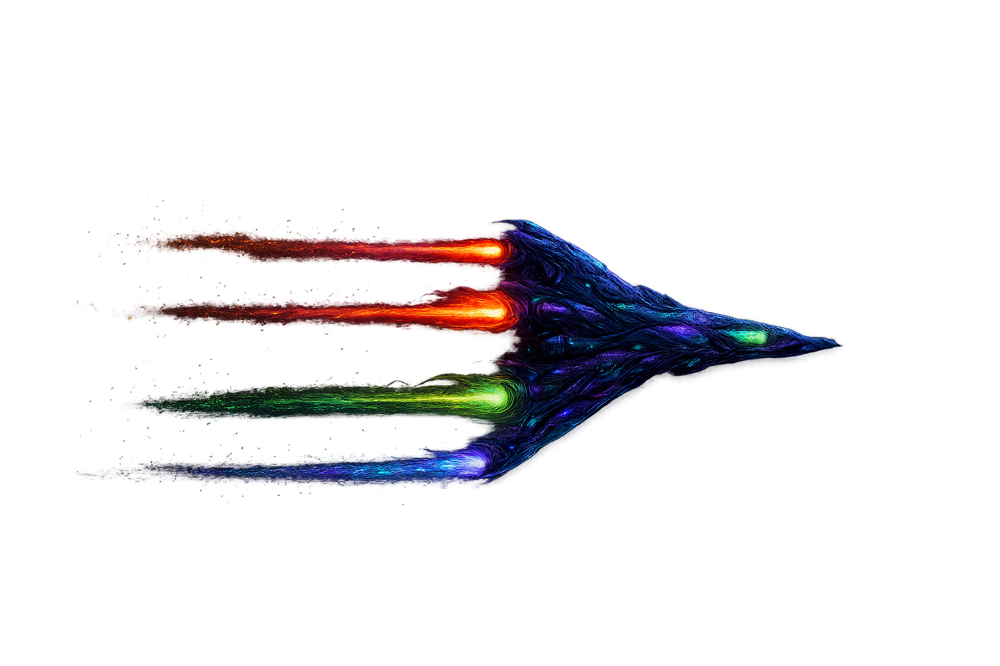
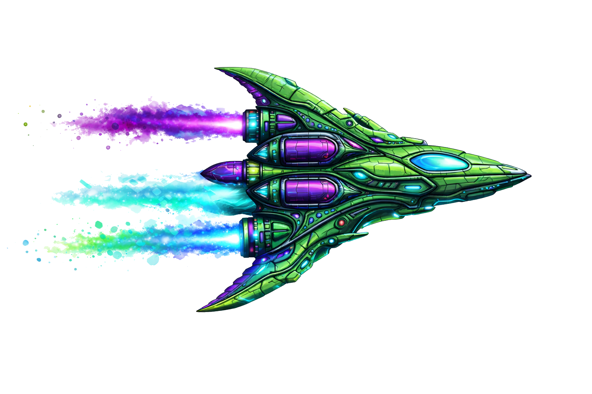

As 7 Naves
Cada nave com características únicas de velocidade, firepower e defesa — role para ver todas

Stealth Frigate
Furtiva e resistente. Difícil de detectar. Disparos duplos de plasma roxo.

Interceptor GR
Velocidade alta. Ideal para hit-and-run. Três canhões de energia verde.

Dark Frigate
Alta furtividade. Opera nas sombras. Disparo duplo de alta precisão.

Phantom
Design exótico. Firepower elevado. Quatro turbinas multicoloridas.

Green Phantom
Versão verde. Mais escudo, menos velocidade. Triplo disparo cósmico.

Stealth Fighter
Compacto e rápido. Alta evasão. Canhões azul-brancos de alta cadência.

Strike Fighter
Especialista em ataque. Máximo dano. Propulsão laranja-negra devastadora.